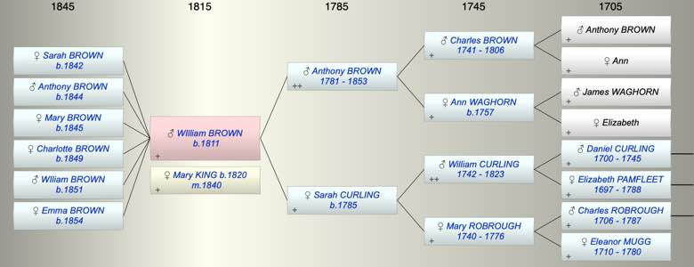

| [Index] |
| WIlliam BROWN (1811 - ) |
|  |
| b. 02 Oct 1811 at City of London |
| m. 30 Apr 1840 Mary Freshfield KING (1820 - ) at Bloomsbury |
| Parents: |
| Anthony BROWN (1781 - 1853) |
| Sarah CURLING (1785 - ) |
| Children (6): |
| Sarah Maria BROWN (1842 - ) |
| Anthony BROWN (1844 - ) |
| Mary Elizabeth BROWN (1845 - ) |
| Charlotte A BROWN (1849 - ) |
| WIliam Charles BROWN (1851 - ) |
| Emma G BROWN (1854 - ) |
| Events in WIlliam BROWN (1811 - )'s life | |||||
| Date | Age | Event | Place | Notes | Src |
| 02 Oct 1811 | WIlliam BROWN was born | City of London | Note 1 | ||
| 30 Apr 1840 | 28 | Married Mary Freshfield KING (aged 20) | Bloomsbury | ||
| 1842 | 31 | Birth of daughter Sarah Maria BROWN | Clapham | ex 1881 census | |
| 1844 | 33 | Birth of son Anthony BROWN | Clapham | ex 1871 census | |
| 1845 | 34 | Birth of daughter Mary Elizabeth BROWN | Clapham | ex 1851 census | |
| 1849 | 38 | Birth of daughter Charlotte A BROWN | Clapham | ex 1881 census | |
| 1851 | 40 | Birth of son WIliam Charles BROWN | Clapham | ex 1871 census | |
| 15 May 1853 | 41 | Death of father Anthony BROWN (aged 72) | Battersea, London | Note 2 | |
| 1854 | 43 | Birth of daughter Emma G BROWN | Clapham | ex 1881 census | |
| Note 1: St George, Botolph Lane ex Ancestry PR |
| Note 2: buried Norwood Cemetery 23 May 1853. Chamberlain of London aged 72 ex Ancestry PR |
| Personal Notes: |
|
1851
1871 living Clapham, WIlliam Brown 59, wholesale stationer, Mary Freshfield Brown 51, Sarah Maria 29, Anthony 27 b Clapham, Charlotte 22, William C 20 b Clapham. 1881 living Quary Hill House, Tonbridge 1891 living Tunbridge Wells aged 70 with Mary F, 71 wife and daughters Sarah M 49, Charlotte A 42 and Emma G 37 all born Clapham |
| Created on a Mac™ using iFamily for Mac™ on 8 Oct 2023 |